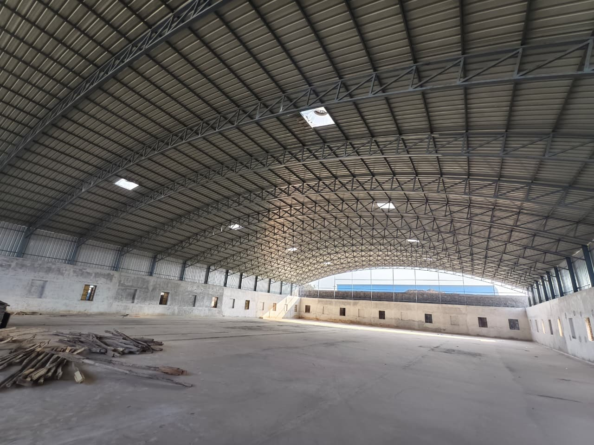

Precision-engineered structural solutions built on ISO 9001:2015 accredited protocols, automated shop-floor workflows, and zero-compromise safety standards.
Equipped with high-tonnage heavy fabrication machinery, automated submerged arc gantries, and computerized CNC processing units in Gujarat.
High-precision computerized cutting for plates up to 100mm thick with multi-torch CNC profiling, beveling for weld prep, and tight nesting accuracy within ±0.5mm.
Automated twin-arc SAW welding stations delivering deep weld penetration, uniform metallurgical fusion, and defect-free longitudinal welds on heavy built-up I-sections.
Automated roller-conveyor blast cleaning to SA 2.5 Swedish standard surface preparation, removing 100% of mill scale and rust to ensure optimum primer mechanical adhesion.
High-build zinc phosphate epoxy primer followed by polyurethane (PU) topcoat achieving an exact 125 micron Dry Film Thickness (DFT) for superior atmospheric corrosion resistance.
CNC structural beam and plate drilling lines providing exact bolt-hole pitch accuracy within ±1mm, guaranteeing effortless field erection without flame-cut modifications.
100% pre-dispatch dimensional inspection auditing member camber, sweep, diagonal squareness, hole centers, and flange alignments against approved shop drawings.
Structural reliability originates with the chemical and mechanical integrity of the base steel. Radhe Infrastructure maintains an uncompromising sourcing policy: 100% of our hot-rolled coils, wide plates, and structural sections are directly procured from India's foremost primary steel manufacturers - SAIL, JSW Steel, and Tata Steel.

Employing calibrated Non-Destructive Testing (NDT) methodologies and certified ASNT/CSWIP inspectors to validate structural soundness at every fabrication stage.
High-frequency acoustic beam probing to identify subsurface planar flaws, slag inclusions, lack of sidewall fusion, and internal laminations in butt welds per AWS D1.1 guidelines.
Electromagnetic yoke testing utilizing fluorescent particles to reveal micro-cracks, surface tears, and seam fissures on ferromagnetic heat-affected zones (HAZ) and fillet joints.
Solvent-removable visible liquid penetrant examination (ASTM E165) executed on root passes, tack welds, and corner gusset joints to verify absence of surface porosity or pinholes.
100% visual auditing by certified inspectors examining bead uniformity, throat thickness, leg dimensions, undercut depth, spatter removal, and preheat temperature monitoring.
Precision calibration checks with calibrated digital total stations, vernier calipers, and laser levels verifying overall length, diagonal squareness, camber, and base plate orientation.
Digital magnetic dry film thickness (DFT) gauges and cross-hatch adhesion testing ensuring complete primer, intermediate MIO, and polyurethane specification compliance per SSPC-PA2.
Operating in complete alignment with statutory regulatory bodies, international engineering codes, and industrial safety covenants.
Certified Quality Management System establishing standard operating procedures across design, raw material sourcing, shop manufacturing, and site assembly.
Full statutory alignment with the Bureau of Indian Standards code of practice for general construction in steel, seismic zone compliance (IS 1893), and wind loads (IS 875 Part 3).
Welding Procedure Specifications (WPS) and Procedure Qualification Records (PQR) qualified per AWS D1.1 and ASME Sec IX, coupled with welder performance certifications.
Zero-Harm Environmental Health & Safety governance conforming to ISO 45001, rigorous Daily Toolbox Talks, mandatory PPE protocols, and proactive Job Hazard Analysis (JHA).